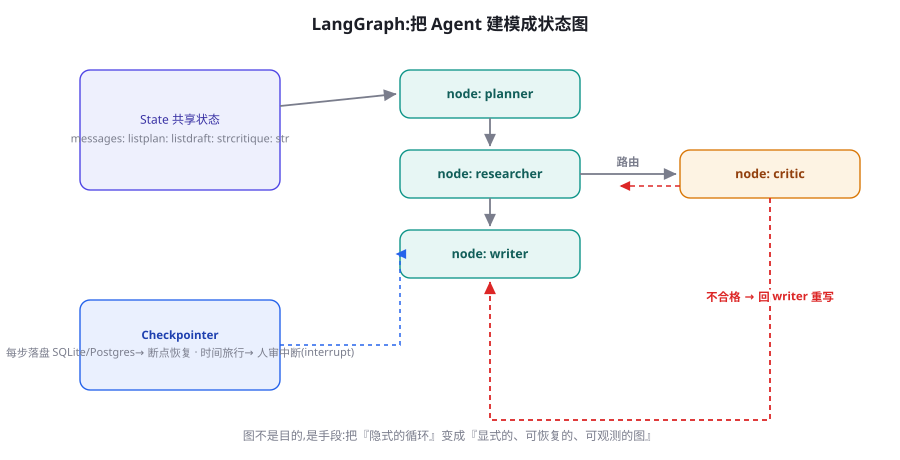

LangChain 与 LangGraph 深度实战
LangChain 生态是 Agent 工程事实上的「普通话」：LangChain 提供组件库，LangGraph 提供状态图运行时。本章越过入门教程，直接讲生产视角的核心机制——图状态机、检查点、人机中断——并诚实地评估这个生态的暗面。
生态地图：LangChain、LangGraph、LangSmith 的分工
三个名字经常被混用，工程上必须分清：LangChain 是组件库——模型接入、文档加载、文本切分、检索器、现成的链；它的价值在「集成广度」（几百种 loader/vectorstore/model 的统一封装），弱点在抽象层次过多。LangGraph 是独立的状态图运行时——把 Agent 建模为「节点（函数）+ 边（路由）+ 共享状态」，原生支持循环、分支、持久化与人工中断；它不依赖 LangChain 的组件层，是本系列推荐的生态入口。LangSmith 是商业观测平台——trace、评测、数据集管理，与开源运行时配套（开源替代见第 79 章的 Langfuse）。三者的关系可以类比：LangChain 是标准库，LangGraph 是运行时，LangSmith 是 APM。

图状态机：把 Agent 变成可声明的流程
LangGraph 的一切围绕 State——一个带类型定义的共享字典。节点是「吃状态、吐状态更新」的函数；边是路由规则（固定边/条件边）；执行器负责按边调度节点、合并状态更新。看一个最小但完整的双节点循环：
from typing import Annotated, TypedDict
from langgraph.graph import StateGraph, END, START
from langgraph.graph.message import add_messages
from langchain_openai import ChatOpenAI
llm = ChatOpenAI(model="gpt-4o-mini", temperature=0)
class State(TypedDict):
messages: Annotated[list, add_messages] # 消息按 append 合并
draft: str # 当前草稿
review: str # 评审意见
rounds: int # 已重写次数(刹车)
def writer(state: State) -> dict:
"""写手节点: 产出或按意见重写"""
if state.get("review"):
out = llm.invoke(
f"按意见重写:\n意见: {state['review']}\n原稿: {state['draft']}")
else:
out = llm.invoke(f"写一段关于 Agent 的 100 字简介:\n"
f"{state['messages'][-1].content}")
return {"draft": out.content}
def critic(state: State) -> dict:
"""评审节点: 打回或放行"""
out = llm.invoke(f"评审以下文字,若合格回答 PASS,否则给意见:\n"
f"{state['draft']}")
return {"review": "" if "PASS" in out.content else out.content}
def route(state: State) -> str:
"""条件边: 通过→END; 不通过且未超限→writer; 超限→END"""
if not state["review"]:
return END
if state.get("rounds", 0) >= 2: # 刹车:最多重写两次
return END
return "writer"
g = StateGraph(State)
g.add_node("writer", writer)
g.add_node("critic", critic)
g.add_edge(START, "writer")
g.add_edge("writer", "critic")
g.add_conditional_edges("critic", route, {"writer": "writer", END: END})
app = g.compile()
result = app.invoke({"messages": [("user", "帮我写简介")], "rounds": 0})
print(result["draft"])这段代码里藏着 LangGraph 的三个设计精髓：① State 是唯一的事实来源——节点之间不直接通信，全靠状态传递，这让每个节点都成为可独立测试的纯函数（第 26 章的「业务逻辑纯函数」纪律在这里天然成立）；② 条件边显式化控制流——「评审不通过就重写」是图的一条边而非藏在提示词里，路由逻辑可被单元测试；③ rounds 字段就是刹车——第 15 章的机制在图里只是一行条件。当你发现自己在手写循环里实现了这三件事的复杂版本，就是迁到图框架的时机（第 27 章的判断式）。
检查点器：断点恢复的工业实现
LangGraph 的杀手级特性是 Checkpointer——图执行的每一步（每次超级步）后自动把完整状态序列化到存储。给它三行配置，你的图就拥有了：崩溃恢复、时间旅行（回放任意历史状态）、以及下一节的人机中断。
from langgraph.checkpoint.postgres import PostgresSaver
# 轻量原型可用: from langgraph.checkpoint.memory import MemorySaver
with PostgresSaver.from_conn_string(
"postgresql://user:pw@localhost:5432/agents") as cp:
cp.setup() # 首次建表
app = g.compile(checkpointer=cp)
config = {"configurable": {"thread_id": "user-42-session-1"}}
# 每次调用带同一 thread_id → 自动续接该会话的全部历史
r1 = app.invoke({"messages": [("user", "帮我写简介")],
"rounds": 0}, config=config)
# ……进程可以在这里死掉……
r2 = app.invoke(None, config=config) # 传 None = 从检查点续跑
# 时间旅行: 回到指定检查点重放(改入参即可探索分支)
states = list(app.get_state_history(config))三个生产提醒：thread_id 是你的「会话主键」——设计它就是设计多租户边界（建议含用户与业务实体 ID，第 19 章记忆隔离同理）；状态里不要放不可序列化的大对象（连接、文件句柄），大产物落外部存储存指针；检查点不等于业务备份——它保存的是执行状态，业务数据的持久化仍在你自己的数据库。
人机中断：interrupt 与 Command
第 25 章的审批机制，LangGraph 用 interrupt 原生支持：在节点内声明暂停点，图停在该节点边界、状态已持久化；人工输入通过 Command(resume=...) 注入，图从暂停点继续。这是把「检查点 + 状态机」组合成协同能力的典范实现：
from langgraph.types import interrupt, Command
def approve_action(state: State) -> dict:
"""高危动作前的人工闸门(第25章的 L2 档)"""
decision = interrupt({ # 图在此暂停并持久化
"question": "是否执行该操作?",
"payload": state["pending_action"], # 审批物:对象/内容/后果
})
# 用户 resume 后,decision 就是注入的值
return {"review": "" if decision["approved"] else
f"用户拒绝: {decision.get('reason', '未说明')}"}
# 服务端: 首次运行到 interrupt 处自然停下
r = app.invoke(inputs, config=config) # 返回值含 __interrupt__
# 审批端: 人看到 payload,做出决定后恢复执行
app.invoke(Command(resume={"approved": True, "reason": ""}),
config=config) # 同一 thread_id 续跑注意 interrupt 与「在节点里 input()」的本质区别：暂停是跨进程、跨时间的——人可以在明天批准，服务可以重启多次，图从数据库里的状态原地复活。这把第 25 章讲的「审批 = 长时间停顿」从工程挑战变成了框架原语。集成到产品时，把「收到 __interrupt 事件 → 渲染审批 UI → 用户操作 → Command(resume)」做成标准链路，你的 Agent 就有了完整的协同骨架。
图上的多 Agent： Supervisor 模式实现
第 24 章的 Orchestrator-Workers 在 LangGraph 里有标准姿势：Supervisor 图——一个「调度节点」读状态决定下一步交给哪个专家节点，专家节点干完活把结果写回状态，循环直至完成。这与第 24 章代码的核心差异是：分派逻辑从命令式代码变成图的拓扑 + 一条路由函数，于是分派规则可被独立测试、可被可视化、也天然获得检查点能力。实现要点三个：专家节点只写自己「领域键」到状态（避免互相覆盖）；路由函数里做预算判断（「本轮已花 X token，超过就强制汇总」）；每个专家可以本身是一张子图（带自己的工具循环），父图只看到其公开 Schema。这段模式代码在官方文档叫 supervisor / network 两种变体，前者控制流清晰（推荐起步），后者灵活但难调试——第 24 章的「生产九成用中心化」结论在图框架里同样成立。
from langgraph.types import Command
from typing import Literal
def supervisor(state: State) -> Command[Literal["researcher", "writer",
"critic", END]]:
"""调度节点: 看状态决定下一个专家(或收工)"""
out = llm.invoke(
f"任务: {state['task']}
"
f"已完成: {state.get('results', {{}})}
"
f"决定下一步交给谁: researcher(还缺资料)/"
f"writer(资料够可写)/critic(有稿可审)/finish")
decision = out.content.strip()
budget = state.get("steps", 0) + 1
if budget > 10: # 预算刹车在路由里
decision = "finish"
if decision == "finish":
return Command(goto=END, update={"steps": budget})
return Command(goto=decision, update={"steps": budget})
# 研究员节点只写自己的键,避免与写手互相覆盖
def researcher(state: State) -> dict:
r = run_research_tools(state["task"])
return {"results": {**state.get("results", {}), "research": r}}Command(goto=..., update=...) 是 LangGraph 把「路由」与「状态更新」合在一个返回值里的现代写法——节点自己声明去向，比外置路由函数更内聚；两种写法官方都支持，团队内统一其一即可。
一张决策表：LangGraph 的功能 ↔ 你的问题
把框架特性与你真实的工程痛点做一张映射表，读完就能对号入座：
| 你的问题 | LangGraph 对应机制 | 替代方案（不引入框架时） |
|---|---|---|
| 进程重启后任务从断点继续 | Checkpointer（Postgres/SQLite） | 手写状态序列化（第 27 章练习三） |
| 高风险动作前人工审批 | interrupt + Command(resume) | 轮询审批表 + 检查点 |
| 动态数量的并行子任务 | Send API | asyncio.gather + 任务书（第 24 章） |
| 可分支回溯的多方案探索 | 条件边 + 时间旅行（get_state_history） | 自维护候选栈（ToT 简化版） |
| 复杂流程的模块化 | 子图 + 字段映射 | 函数封装 + 显式交接物 |
| 执行过程可视化 | stream_mode="updates" / LangSmith | 逐步日志（trace.jsonl） |
进阶特性速览：Send、子图与流式
- Send API（动态分派）：条件边返回
Send("worker_node", state_for_this_worker)可以在运行时动态创建 N 个并行副本——第 24 章 Orchestrator-Workers 的图原生实现，分派数量由状态决定（比如「按计划步数并行」）。 - 子图（Subgraph）：把一张图作为另一张图的节点——第 18 章分层规划的落地原语。子图拥有独立的 State Schema，通过字段映射与父图交接，天然形成上下文隔离。
- 双模式流式：
stream_mode="updates"逐步吐出每个节点的状态更新（进度展示），"values"吐全量状态；配合astream_events还能拿到 LLM token 级流。第 27 章延迟铁律的「过程可见性」，框架已替你铺好。 - Durable Execution 意识：LangGraph 的持久化是「状态快照」式的，与 Temporal 的「事件溯源重放」是两种耐久范式——超长任务（天级）与外部副作用多的场景，评估后者（第 80 章）。
成本视角：图运行时的开销结构
用框架后，成本结构多了一层「运行时税」与一层「隐性节省」。税的部分：Checkpointer 每超级步写一次状态（含全部消息历史），长对话下序列化开销与存储增长可观——Postgres 存储按月清理 + 大结果指针化可以压住；图执行器的自身开销（毫秒级）通常可忽略。省的部分更值得看：Send API 的并行分派把墙钟时间压缩（第 24 章的时延收益）；interrupt 机制让人审的等待不再占用任何计算资源（对比手写轮询）；以及最容易被忽视的——调试时间的下降。团队迁移到图后的真实账本里，「排障时间减半」常常比「token 成本」更值钱：一次线上事故的平均定位时间从小时级降到分钟级，全年的工程小时数节省远超基础设施开销。评估框架成本时，请永远把「人的时间」计入分母。
LCEL 一瞥：组件层的胶水语法
既然谈 LangChain 组件层，绕不开它的链式语法 LCEL（LangChain Expression Language）——用 | 管道把组件串起来：prompt | llm | parser。对它的定位要精确：LCEL 是「固定管线」的表达法，不是 Agent 的表达法。它擅长第 7 章那种线性提示链（每步确定、无路由），并自带批量、流式与异步的统一实现——一条 LCEL 链天然获得 batch()/stream()/ainvoke() 三件套，这是它实打实的便利。但它没有循环与条件（有 also-run 之类的旁路语法，复杂后可读性骤降），所以「管线的归 LCEL，会拐弯的归 LangGraph」——两者在同一项目里共存完全正常：用 LCEL 写单个节点的内部处理，用 LangGraph 编排节点之间。把这条分工讲清楚，团队里「为什么有两套链式写法」的困惑会少一大半。
调试实战：一次图故障的十全定位
用一个真实故障演示「有 trace 的调试长什么样」。现象：生产图偶发产出空草稿（draft: ""）。无 trace 的做法是加 print 重跑——偶发问题复现不了，一天白过。有 trace 的十步定位：① 在 Langfuse 按「draft 为空」过滤出 7 条失败 trace；② 打开一条，看节点时序——writer 执行了，critic 也执行了；③ 展开 writer 的输入——上游状态里 messages 为空列表；④ 上溯该状态的写入者——是前一次运行的「重置节点」；⑤ 对比成功 trace，发现成功用例走的是另一条边（没经过重置节点）；⑥ 定位到根因：条件边的路由函数在「输入含附件」时误入重置分支；⑦ 修复路由条件；⑧ 把该场景加入评测集（回归钉子）；⑨ 在路由函数补单测；⑩ 总耗时 40 分钟。这个案例的元教训：偶发故障的排查效率 = trace 的完备度 × 状态的可视性——图框架把这两样都做成了默认值，这是「抽象税」买到的最实在的东西。
生产接入清单：LangGraph 上线前的七件事
- Pin 版本 + 订阅 changelog：破坏性变更的历史教训（本章暗面节），锁小版本、升级走测试。
- State Schema 写全类型注解：它是图的「数据库表设计」，含糊的 State 是未来一切 bug 的温床。
- 节点保持纯函数：网络调用集中在工具层与统一的 LLM 客户端，节点只做编排与业务转换。
- thread_id 设计即租户设计：包含用户/组织标识；配合检索层的 ACL（第 20 章）构成完整隔离。
- 检查点库的运维：Postgres 表会持续增长，配置分区与清理策略（历史检查点保留 N 天）。
- 超时与重试在节点级声明：LangGraph 支持节点级 retry policy，别把重试藏在工具里两套并存。
- trace 全量接观测平台：LangSmith 或 Langfuse（第 79 章），没有 trace 的图调试等于盲修。
迁移案例：从手写循环到图的三周
一个有代表性的真实迁移（细节匿名）。某团队的内容生产 Agent 原为 700 行手写循环（第 27 章的放大版），痛点是「三种不同内容类型走不同流程，if-else 缠成一团」。迁移三周：第一周：把现有流程画成图——这一步与框架无关，产出的是流程真相（团队第一次发现两处「说了要审核但从未执行」的幽灵分支）；第二周：节点函数从原代码剥出（业务逻辑已是纯函数，第 26 章纪律兑现价值），接 LangGraph；第三周：接 Checkpointer 与 interrupt（此前的人审是钉在流程里的轮询 hack），删除 300 行自管理代码。结果：代码量 -40%，新增第三种内容类型的时间从三天降到半天（画一张子图），但运行时行为有了细微变化（状态合并语义与手写版不同），靠夜间评测集捕获并修齐。迁移的真正成本不在写图，在「行为等价性验证」——这就是评测集先行的又一记实锤。
LangChain 组件层：用它的「什么」
对 LangChain 组件库，生产视角的取舍建议按「集成密度」划分。值得用：文档加载器与切分器（第 20 章的脏活累活，社区适配最全）、向量库统一接口（换库不改代码）、现成 Reteriever 封装、以及 Output Parser 的常用款。谨慎用：各种高级「Chain」抽象（LCEL 之外的 Legacy 链）与大量「全家桶式」的 Agent 预制件——它们的抽象层次太厚，出错时调试成本高于自写。替换性地用：提示词模板（用你自己的字符串管理 + 版本控制，第 6 章）与记忆组件（第 19 章的自研双区制通常更贴合业务）。判断标准一句话：组件层的价值 = 集成数量 × 你对该抽象的透明度需求成反比——胶水代码值得买，业务语义层值得自建。
对这个生态最公平的评价也包括它的代价。其一，破坏性变更有前科：LangChain 在快速迭代期多次重构核心抽象（chains → LCEL → LangGraph 的重心转移），早期教程大量失效——应对之道是 pin 版本 + 阅读官方 migration guide + 把业务逻辑隔离在框架外（第 26 章纪律）。其二，抽象税真实存在：多层包装让堆栈变深，报错时你需要穿越若干层框架代码定位到自己的函数——对策是善用 LangSmith/Langfuse 的 trace（框架内部的执行细节都被记录），以及坚持「节点为纯函数」让单元测试替代部分调试。其三，教程与现实的落差：官方教程演示的是「十行跑通」，生产需要的是错误处理、并发、鉴权与评测——中间的距离正是本书第三部分存在的原因。理解这些暗面不是劝退，而是让你带着正确的预期进入。
三个高频疑问
Q：LangGraph 和 AutoGen/CrewAI 怎么选？维度是「控制流的表达方式」：LangGraph 用图（显式拓扑，你声明每条边），AutoGen 用对话（Agent 间消息驱动，涌现控制流），CrewAI 用角色+流程配置（更高层）。生产推荐的顺序是 LangGraph 优先（可预测、可持久化、可测试）；群聊类只在探索期（第 24 章的「毕业」模式）。已经深度投资某个生态的团队，切换成本主要在持久化与观测的重建——评估时把这两项算进去。
Q：State 设计有没有最佳实践？四条：字段按「谁写」分组（每个专家只写自己的键，合并冲突归零）；消息列表用 add_messages 注解（框架处理追加与去重）；业务产物（长文/大结果）只存指针不存全文（State 是热数据不是仓库）；加一个 meta 字段放预算、轮次、启动时间——刹车与观测的统一挂载点。State 变更要走「迁移」心态：新增字段向后兼容，删除字段先弃用一轮。
Q：要不要用官方 CLI 脚手架（langgraph new）起步？适合第一次跑通（模板含标准目录与部署配置）；正式项目建议从空目录自建——脚手架预设的结构不一定匹配你的业务分层，而且你刚在本书学过所有该有的部件，照模板拼不如按需搭。
本章的实战代码与第 27 章构成完整的「手写 ↔ 框架」对照系。建议做一个十五分钟的实验收尾：把第 27 章练习三的检查点行为与本章 Checkpointer 各自跑一遍「进程中途 kill 再恢复」，对比恢复后能拿到的信息（消息历史？工具结果？用户输入？）——差异清单就是框架替你维护的东西的精确清单，也是你对「抽象税」买到了什么的收据。下一章换一个哲学：OpenAI 把 Agent 做成了「轻 SDK + 托管原语」的组合，同样的机制清单会以另一种面貌出现。
与其他章节的连接
本章机制在全书中的落点：State 设计 ↔ 第 19 章记忆（State 就是工作记忆的形状）与第 23 章上下文预算（State 是预算的执行现场）；Checkpointer ↔ 第 25 章人机协同（中断恢复的地基）与第 76 章长时程（跨会话续跑）；Send API ↔ 第 24 章多 Agent（动态并行分派）；子图 ↔ 第 18 章分层规划（计划树的每层一张图）；trace 集成 ↔ 第 79 章可观测性。读后续章节时，凡涉及「工程实现」，LangGraph 通常都有一一对应的原生机制——你的「框架翻译能力」会随着机制理解加深而增强，反之亦然。下一章我们把镜头转向 OpenAI 的 Agents SDK：同样的机制清单（handoff、guardrail、session、tracing），更薄的原语设计——对比着读，框架选型的品味就养成了。
还有一条来自运维现场的忠告值得单独成段：给图执行加「单线程哨兵」。LangGraph 的并发模型默认乐观——两个请求共享同一 thread_id 时，后写覆盖前写，没有天然的锁。多数业务下这是正确语义（同一会话本就应串行），但「用户双开窗口」「重试风暴」会让同一 thread 的两个执行交错跑，产生「状态闪烁」型故障（上一轮的回答突然消失）。生产防线：网关层按 thread_id 加分布式锁或串行队列；写入侧发现版本冲突时拒绝并提示「上一条还在处理」。这个问题的发生率不高，一旦发生极难排查——因为它的现象看起来像「模型疯了」而不是「并发冲突」。把它写进你的部署检查清单。
关于学习路径的最后建议：LangGraph 的官方教程节奏是「先玩具图后大图」，与本书相反——本书先给你机制（第 15-27 章）再给框架。如果你读官方文档时感到「每个 API 都认识、合在一起不知道为什么」，回到第 15 章（循环）、第 25 章（中断）、第 19 章（状态即记忆）各重读一节，再回来会有「原来如此」的贯通感。框架文档教你怎么用，机制理解教你什么时候不该用——两者都拥有的人，才是团队里那个能做选型决策的人。
把本章第一个「草稿-评审」图跑起来后，做三个小改动各观察一次：改动一——把 critic 的温度调到 0.8，观察评审意见的波动幅度（并思考这对「重写循环收敛性」的影响）；改动二——在 State 里加 style: str 字段并让 writer 读取，体验「加一个状态字段 = 加一种能力」的扩展模型；改动三——故意让 critic 永远不通过，验证 rounds 刹车在两次重写后终止。三个实验对应图编程的三个核心手感：提示词影响收敛、State 驱动能力、刹车必须真实触发过才算存在。
从教学法角度补一段说明：本章示例刻意选了「写手-评审」这个最小领域，而不是更炫的「多 Agent 研究部」。原因是一个经过反复验证的学习观察：新手在复杂领域示例里学的是「领域」，在简单领域示例里学的才是「机制」。写手-评审的五分钟示例里，图的所有关键机制（状态合并、条件路由、循环刹车、检查点、中断）一个不少；等你机制熟练后，第 24 章的编排与第 73 章的深研系统再回来时，你读它们的角度会完全不同——从「这个系统好复杂」变成「不过是三张子图加一个 Supervisor」。示例的简单是刻意的教学设计，不是内容的浅。
版本策略：跟着哪条线走
最后回答版本焦虑。这个生态有三条版本线，跟进策略各不同：LangGraph 核心（langgraph 包）——API 稳定性承诺最强，跟随 minor 版本即可，这是你该建立主要资产的地方；LangChain 组件层（langchain 包）——集成多、变动快，用到的每个组件 pin 精确版本，升级走灰度； partners 包（langchain-openai 等）——跟着厂商 SDK 走，被动升级。一个实用的保险丝：所有 import 集中在 deps.py 单文件——生态变动时，你的适配工作被压缩到一个文件的边界内。这条建议对下一章的 OpenAI SDK 同样适用，对本书之后十年出现的任何框架照样适用——因为它是把「生态风险」关进「依赖边界」的通用工程学。
收尾前回答一个隐含的疑问：「我已经会用 X 框架了，还需要读本章吗？」判断标准不是框架名，而是你对三件事的掌握：State 的设计能力（你的状态字段是否按「谁写」分组）、持久化的理解（你的检查点存什么、多久存、怎么恢复）、以及人机中断的工程化（审批是否跨进程存活）。三件事都能答上来，任何框架对你都只是语法差异；答不上来，换到任何框架都会重演同样的架构债——因为债的主体的机制理解，不是 API 熟练度。这也正是本书坚持「机制先行」的全部理由。
本章小结
- 三分法：LangChain 组件库 / LangGraph 运行时 / LangSmith 观测——生态入口推荐 LangGraph。
- 图三精髓：State 是唯一事实来源、条件边显式化控制流、刹车就是状态里的一个字段。
- Checkpointer 三行配置换崩溃恢复 + 时间旅行 + 人机中断；thread_id 是多租户边界。
- interrupt/Command 把「审批=长时间停顿」变成框架原语。
- 偶发故障的排查效率 = trace 完备度 × 状态可视性；图框架把两者做成默认值。
- 组件层按集成密度取舍：胶水值得买，业务语义自建；警惕版本迁移与抽象税。
- LCEL 管固定管线，LangGraph 管会拐弯的流程——同一项目共存且分工明确。
- Supervisor 模式把第 24 章的分派逻辑画成路由边：分派可测试、可持久化、可可视化。
自测题
- 把第 27 章的 mini_agent 改写成一张 LangGraph 图：节点是哪几个？State 里必须有哪些字段？哪些手写防御被框架替代了？
- 为什么「节点之间不直接通信、只通过 State」是优点而非限制？
- interrupt 与在节点里轮询审批数据库的实现，在「服务重启」「审批人隔天处理」两个场景下行为差异是什么？
- 你的项目该在什么信号出现时，从第 27 章的手写循环迁移到 LangGraph？写出两个具体信号。
参考文献与延伸阅读
- LangChain (2024). LangGraph 官方文档：Graphs / Persistence / Human-in-the-loop. langchain-ai.github.io/langgraph
- LangChain (2024). LangGraph 博客：How to guide your agent's runtime (Send API). blog.langchain.dev
- LangChain (2025). LangSmith 文档. docs.smith.langchain.com
- Harrison Chase (2023). LangChain 早期设计笔记. blog.langchain.dev
- DeepLearning.AI (2024). AI Agents in LangGraph 课程. deeplearning.ai（免费短视频课，适合入门补充）
- langgraph-examples (2024). 官方示例仓库. github.com/langchain-ai/langgraph